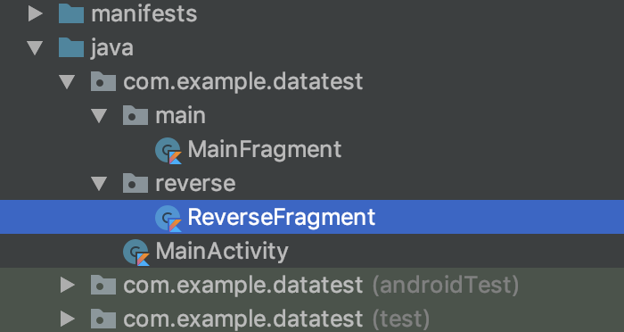
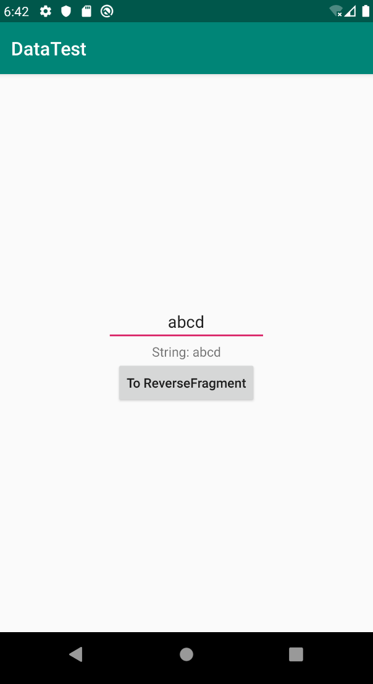
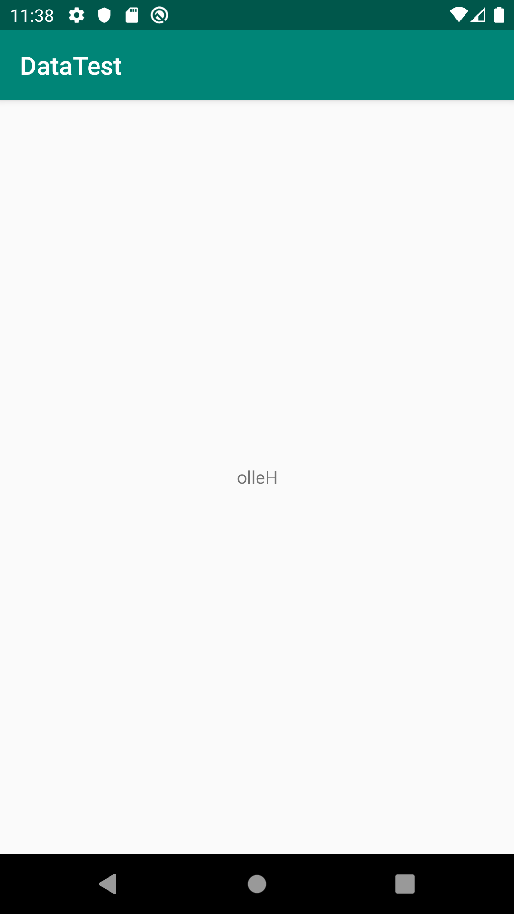
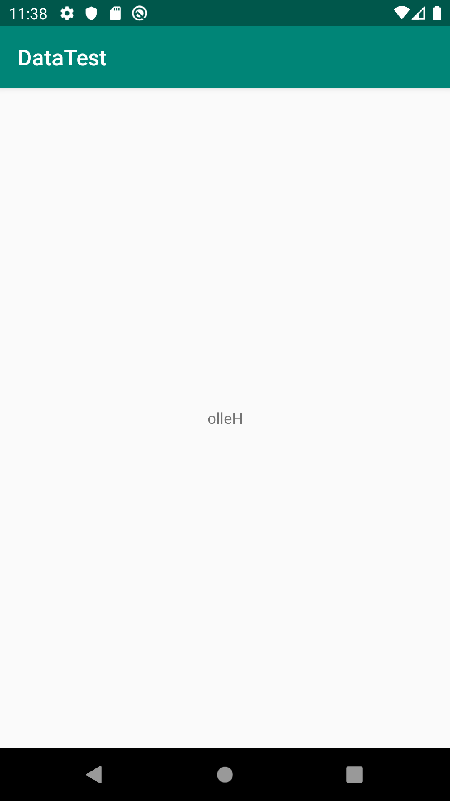

次の2つの事項について扱う。
- DataBindingにおけるデータの受け渡し
- Navigationを用いた、異なるFragment間におけるデータの受け渡し
さらに具体的に言うと、次の機能を持つアプリを作る
MainFragmentにはEditTextが1つある。- EditTextが入力されると、TextViewが"String: [EditTextの文字列]“に変わる。
- Buttonが押されると、
ReverseFragmentに遷移する
ReverseFragmentは、MainFragmentのテキストフィールドの文字列を受け取って、それを逆順にした文字列を表示する。
Android Kotlin Fundamentals Courseでの05辺りを勉強した記録なので、詳しいことはそちらに載っている。
プロジェクト初期設定
“Empty Project"として作成して、名前を"DataTest"とする。
build.gradle(module:App)について、dataBindingの設定をしておく。
次のようにMainFragmentとReverseFragmentを作成しておく。作成時、“Create layout XML?“にのみチェックをつけておく。

MainFragmentの設定
fragment_main.xmlを次のようにする。
<?xml version="1.0" encoding="utf-8"?>
<layout xmlns:android="http://schemas.android.com/apk/res/android"
xmlns:tools="http://schemas.android.com/tools"
tools:context=".main.MainFragment">
<data>
<variable
name="myMsg"
type="com.example.datatest.main.MainFragment.MyMsg" />
</data>
<LinearLayout
android:layout_width="match_parent"
android:layout_height="wrap_content"
android:orientation="vertical"
android:layout_gravity="center_vertical" >
<EditText
android:id="@+id/edit_text"
android:layout_width="wrap_content"
android:layout_height="wrap_content"
android:hint="@string/hello_blank_fragment"
android:layout_gravity="center_horizontal"
android:textAlignment="center" />
<TextView
android:id="@+id/text_view"
android:layout_width="wrap_content"
android:layout_height="wrap_content"
android:text="@={myMsg.text}"
android:layout_gravity="center_horizontal"
android:textAlignment="center" />
<Button
android:id="@+id/button"
android:layout_width="wrap_content"
android:layout_height="wrap_content"
android:layout_gravity="center_horizontal"
android:text="@string/to_reverse_fragment"
android:textAllCaps="false" />
</LinearLayout>
</layout>
重要なのは以下の部分で、これはMainFragment.ktで定義されたMyMsgというクラスのインスタンスをこのファイルではmyMsgとして扱う、という意味。
<data>
<variable
name="myMsg"
type="com.example.datatest.main.MainFragment.MyMsg" />
</data>
実際には、@={variableで定義したname.メンバ}という形でアクセスする。
<TextView
...
android:text="@={myMsg.text}"
... />
さてMyMsgというクラスを作っていないので、それも兼ねてMainFragment.ktの編集をする。以下のようにする。
addTextChangedListenerを用いると、EditTextの変化を捕捉できる。
class MainFragment : Fragment() {
data class MyMsg(var text: String = "")
private lateinit var binding: FragmentMainBinding
override fun onCreateView(
inflater: LayoutInflater, container: ViewGroup?,
savedInstanceState: Bundle?
): View? {
// Inflate the layout for this fragment
binding = DataBindingUtil.inflate(inflater, R.layout.fragment_main, container, false)
binding.myMsg = MyMsg("Hello")
binding.editText.addTextChangedListener {
binding.myMsg?.text = "String: " + it.toString()
binding.invalidateAll()
}
return binding.root
}
}
Kotlinでは、メンバ変数のみで作られたクラスを次のように簡潔に書ける。C言語におけるstructみたいなもの。
data class MyMsg(var text: String = "")
main_fragment.xmlで定義したvariable要素は以下の部分に対応している。name属性がmyMsgだったのでbinding.myMsgでアクセスする。
binding.myMsg = MyMsg("Hello")
(寄り道) apply関数の利用
applyを利用すると、binding.[メンバ]という書式が単に[メンバ]だけで記述できるようになる。このような関数を「スコープ関数」と呼ぶ。
class MainFragment : Fragment() {
data class MyMsg(var text: String = "")
private lateinit var binding: FragmentMainBinding
override fun onCreateView(
inflater: LayoutInflater, container: ViewGroup?,
savedInstanceState: Bundle?
): View? {
// Inflate the layout for this fragment
binding = DataBindingUtil.inflate(inflater, R.layout.fragment_main, container, false)
binding.apply {
myMsg = MyMsg("Hello")
editText.addTextChangedListener {
myMsg?.text = "String: " + it.toString()
invalidateAll()
}
}
return binding.root
}
}
とりあえずのactivity_main.xml
MainFragmentが正しく機能しているかどうか確認したいので、activity_main.xmlを編集する。Navigationと連携させるときに書き直す。
<?xml version="1.0" encoding="utf-8"?>
<layout xmlns:android="http://schemas.android.com/apk/res/android"
xmlns:app="http://schemas.android.com/apk/res-auto"
xmlns:tools="http://schemas.android.com/tools"
tools:context=".MainActivity">
<LinearLayout
android:layout_width="match_parent"
android:layout_height="wrap_content"
android:layout_gravity="center_vertical"
android:orientation="vertical">
<fragment
android:id="@+id/myNavHostFragment"
android:name="com.example.datatest.main.MainFragment"
android:layout_width="match_parent"
android:layout_height="wrap_content" />
</LinearLayout>
</layout>
この時点でアプリを起動してみると、以下のようになる。EditTextにabcdを入力すると、その下にString: abcdと出力される 。

Navigationの作成
とりあえず遷移できるところまで作る。
fragment_reverse.xmlの内容を以下の通りにする。
<?xml version="1.0" encoding="utf-8"?>
<FrameLayout xmlns:android="http://schemas.android.com/apk/res/android"
xmlns:tools="http://schemas.android.com/tools"
android:layout_width="match_parent"
android:layout_height="match_parent"
tools:context=".reverse.ReverseFragment">
<TextView
android:id="@+id/reverse_text_view"
android:layout_width="match_parent"
android:layout_height="match_parent"
android:text="@string/hello_blank_fragment" />
</FrameLayout>
ReverseFragment.ktについては、とりあえず次のようにしておく。
class ReverseFragment : Fragment() {
private lateinit var binding: FragmentReverseBinding
override fun onCreateView(
inflater: LayoutInflater, container: ViewGroup?,
savedInstanceState: Bundle?
): View? {
binding = DataBindingUtil.inflate(inflater, R.layout.fragment_reverse, container, false)
return binding.root
}
}
NavigationのResource Fileを作成する(詳しいことは(2)の記事で話した通り)。次に、res/navigation/navigation.xmlの内容を以下の通りにする。MainFragmentからReverseFragmentへ接続する。
<?xml version="1.0" encoding="utf-8"?>
<navigation xmlns:android="http://schemas.android.com/apk/res/android"
xmlns:app="http://schemas.android.com/apk/res-auto"
xmlns:tools="http://schemas.android.com/tools"
android:id="@+id/navigation.xml"
app:startDestination="@id/mainFragment">
<fragment
android:id="@+id/mainFragment"
android:name="com.example.datatest.main.MainFragment"
android:label="fragment_main"
tools:layout="@layout/fragment_main" >
<action
android:id="@+id/action_mainFragment_to_reverseFragment"
app:destination="@id/reverseFragment" />
</fragment>
<fragment
android:id="@+id/reverseFragment"
android:name="com.example.datatest.reverse.ReverseFragment"
android:label="fragment_reverse"
tools:layout="@layout/fragment_reverse" />
</navigation>
MainFragment.ktのbinding.apply { ... }の部分を以下のように修正する。Buttonを押した時に遷移する。
binding.apply {
myMsg = MyMsg("Hello")
editText.addTextChangedListener {
myMsg?.text = "String: " + it.toString()
invalidateAll()
}
button.setOnClickListener {
it.findNavController().navigate(R.id.action_mainFragment_to_reverseFragment)
}
}
Gradleの設定
Safe Argsの有効化
異なるFragment間でデータのやり取りをする際、以前はBundleという形式で行っていたらしい。現在は、型安全な状態でデータを受け渡すことができるSafe Argsという仕組みがあるので、そちらを利用する。
build.gradle(Project: ...)のbuildscript-dependenciesに以下のclasspathを追加する。
buildscript {
...
dependencies {
...
classpath "androidx.navigation:navigation-safe-args-gradle-plugin:2.1.0"
...
}
}
build.gradle(Module: app)の先頭のapply ...の行に、さらに追加する。
...
apply plugin: "androidx.navigation.safeargs"
これを追加すると、例えばnavigation.xmlで指定していたMainFragmentのaction要素は、MainFragmentDirectionsのメンバ変数としてアクセスできるようになる。例えば、action_mainFragment_to_reverseFragmentというidのactionはMainFragmentDirections.actionMainFragmentToReverseFragment()としてアクセスできる。これは、Fragment遷移時にデータを渡したい時に必要になる。
lifecycle extentionの有効化
build.gradle(Module: app)の先頭のdependencies { ... }の行に、さらに追加する。
dependencies {
...
implementation "androidx.lifecycle:lifecycle-extensions:2.1.0"
}
これはViewModelProvidersを利用するために必要になる。
データを渡す
受け渡すデータの設定
navigation.xmlの、ReverseFragmentの部分を以下のように編集する。
ここでは、MainFragmentからReverseFragmentへ、値strを渡すことを考える。このとき、受け取り手にargument要素を追加する。
<fragment
android:id="@+id/reverseFragment"
android:name="com.example.datatest.reverse.ReverseFragment"
android:label="fragment_reverse"
tools:layout="@layout/fragment_reverse" >
<argument
android:name="str"
android:defaultValue="0"
app:argType="string" />
</fragment>
編集し終えたら、Rebuildを行う。僕の環境の場合、これをやらないとあとで説明するaction.strが解決されなかった。
データを渡す処理
MainFragment.ktのbutton.setOnClickListenerの部分を以下のように編集する。MainFragmentDirections.actionMainFragmentToReverseFragment()でactionを取得し、action.str = 値で値を渡している。
button.setOnClickListener {
val action = MainFragmentDirections.actionMainFragmentToReverseFragment()
action.str = editText.text.toString()
it.findNavController().navigate(action)
}
(寄り道)ViewModelの基礎
Android Kotlin Fundamentals Course05-1では、ViewModelとViewModelFactoryを作り、それを利用してデータを受け取っていた。今回のような小規模なアプリだと、この方法はやや大げさな気がするが、とりあえずこのチュートリアル通りの方法で作ることにする。
そもそもViewModelとは
DataBinding同様、新しい仕組みらしい。この辺りの話はAndroid Architecture Componentに記されている。
ViewModel単体の話はViewModelの概要に載っている。例え画面遷移や回転などでUIが再描画されたとしても、データを保持することができるらしい。ViewModelにはView(ActivityやFragmentのこと)に表示するためのデータを保持しておく。このようにViewとViewModelという役割分担を行うことで、View中に書くコードの肥大化を防げる。
ViewModelを試しに作ってみる
ReverseFragment.ktの内容を以下のようにする。
TestViewModelはViewModelを継承している。TestViewModelのインスタンスを取得するために、ViewModelProvidersを利用する。ViewModelProvidersを介せず直接TestViewModelをインスタンス化すれば良いのでは？と思ったが、それだと恐らくアプリがViewModelの存在を検知してくれないのだと思う(つまりViewの再生成のときにデータを保持してくれない)。
class TestViewModel : ViewModel() {
var name: String = "Taro"
var age: Int = 123
}
class ReverseFragment : Fragment() {
private lateinit var viewModel: TestViewModel
private lateinit var binding: FragmentReverseBinding
override fun onCreateView(
inflater: LayoutInflater, container: ViewGroup?,
savedInstanceState: Bundle?
): View? {
binding = DataBindingUtil.inflate(inflater, R.layout.fragment_reverse, container, false)
viewModel = ViewModelProviders.of(this)
.get(TestViewModel::class.java)
binding.reverseTextView.text = viewModel.name
return binding.root
}
}
これでアプリを起動すると、“To ReverseFragment"ボタンを押すと"Taro"と書かれたFragmentに遷移する。
データを受ける
以上を踏まえて、実際に書いてみる。
データの受け方
ReverseFragmentArgs.fromBundle(arguments!!).strで、ReverseFragmentで設定したargument(android:name:str)にアクセスできる。この値をReverseViewModelのコンストラクタの初期値として設定しよう。
ReverseViewModelの作成
reverse/ReverseViewModel.ktを作成して、内容は次のようにする。受け取る予定のstrをコンストラクタ引数として設定する。reverseStrは反転後の文字列とする
package com.example.datatest.reverse
import androidx.lifecycle.ViewModel
class ReverseViewModel(private val str: String) : ViewModel() {
var reverseStr: String = str.reversed()
}
ViewModelを初期化するときはViewModelFactoryを経由しなければならない。reverse/ReverseViewModelFactory.ktを作成して、内容は次のようにする。
package com.example.datatest.reverse
import androidx.lifecycle.ViewModel
import androidx.lifecycle.ViewModelProvider
class ReverseViewModelFactory(private val str: String) : ViewModelProvider.Factory {
override fun <T : ViewModel?> create(modelClass: Class<T>): T {
if (modelClass.isAssignableFrom(ReverseViewModel::class.java)) {
return ReverseViewModel(str) as T
}
throw IllegalArgumentException("Unknown ViewModel class")
}
}
reverse/ReverseFragment.ktを以下のように編集する。ViewModelProviders.ofの第2引数にViewModelFactoryを指定する。
class ReverseFragment : Fragment() {
private lateinit var viewModel: ReverseViewModel
private lateinit var viewModelFactory: ReverseViewModelFactory
private lateinit var binding: FragmentReverseBinding
override fun onCreateView(
inflater: LayoutInflater, container: ViewGroup?,
savedInstanceState: Bundle?
): View? {
binding = DataBindingUtil.inflate(inflater, R.layout.fragment_reverse, container, false)
viewModelFactory = ReverseViewModelFactory(ReverseFragmentArgs.fromBundle(arguments!!).str)
viewModel = ViewModelProviders.of(this, viewModelFactory)
.get(ReverseViewModel::class.java)
binding.reverseTextView.text = viewModel.reverseStr
return binding.root
}
}
アプリを起動する。EditTextに文字列を入力して"To ReverseFragment"ボタンを押すと、遷移後のFragmentではその逆順のものが出力される。
 

とりあえず形になった。今回はここまで。